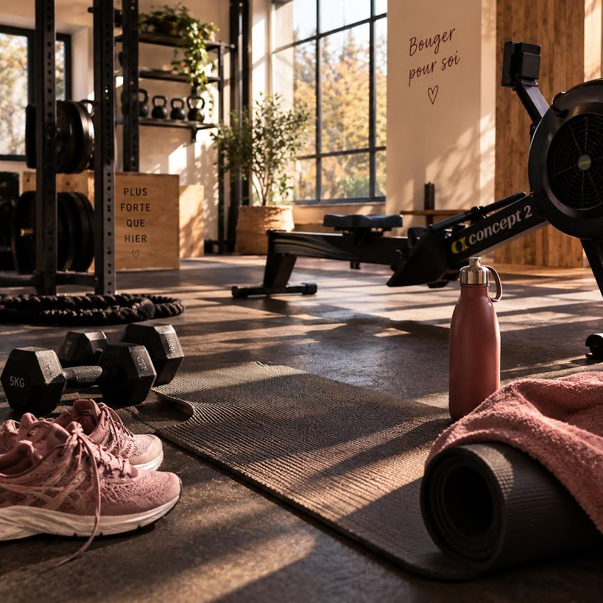

Le corps
Renforcement, mobilité, mouvement, activité physique adaptée et reconnexion corporelle pour bouger avec plus de confort et de confiance.
Drôme · Ardèche
Reconnexion à soi accompagne les femmes et les personnes qui souhaitent retrouver énergie, confiance, mouvement et équilibre grâce à une approche globale du bien-être.

CORPS · CONFIANCE · ÉQUILIBRE
L'art d'être soi
Sport santé, mouvement, reconnexion corporelle, confiance en soi, estime de soi, créativité et temps pour soi : Reconnexion à soi propose un accompagnement humain, accessible et personnalisé à Saint-Péray et autour de Valence.
L'objectif n'est pas de rechercher la perfection. Il s'agit de retrouver progressivement une relation plus sereine avec son corps, ses émotions, ses envies et ses projets.
Une approche globale
Renforcement, mobilité, mouvement, activité physique adaptée et reconnexion corporelle pour bouger avec plus de confort et de confiance.
Confiance en soi, estime de soi, émotions, limites personnelles et nouveaux repères pour avancer avec davantage de clarté.
Danse, créativité, marche, observation, expression et expériences positives pour remettre du plaisir et du mouvement dans son quotidien.
« Se reconnecter à soi, ce n'est pas devenir quelqu'un d'autre. C'est retrouver ce qui est déjà là. »
Sans formule obligatoire
Besoin d’échanger, de faire le point ou d’être accompagnée ponctuellement ? Vous n’êtes pas obligée de faire du sport, de suivre un parcours ou de participer à un atelier.
Accompagnement local
Les accompagnements sont pensés pour les personnes de Saint-Péray (07130), Valence et des communes alentour dans un rayon d'environ 25 km, en Drôme et en Ardèche.